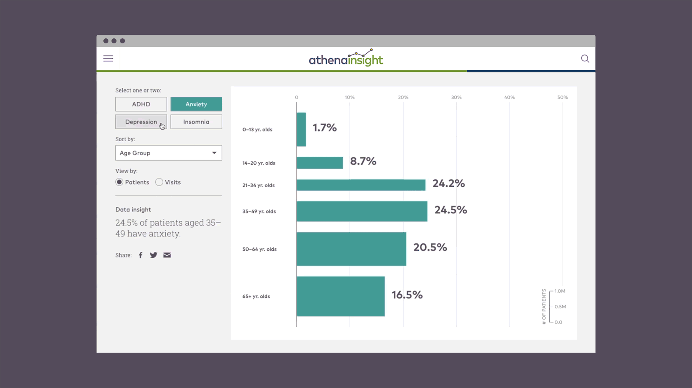

Concept
Athenahealth approached Sosolimited with the prompt to create an interactive experience for athenaInsight, their new data hub. They needed a visualization that allows viewers to see how mental health affects demographics of patients across their vast network.
The main objectives were to bring awareness to the prevalence of mental illness in the US, as well as promote athenaInsight as an emerging leader in providing data to the healthcare industry at large.
You can view and interact with the full visualization at athenaInsight.

Process
The design employs bars with the height corresponding with population size and the width with percentage affected by illness. When a user selects two illnesses, they can see how the overlap in the middle, and a tooltip displays the percentage breakdown of the illnesses on hover. Transitional animations add some polish to the finished product.
Impact
The behavioral health interactive takes multiple pieces of complex medical data and transforms it into an easy-to-understand, visual tool. Mobile usability and an algorithmic social sharing option accommodates athenaInsight’s core audience, healthcare professionals who are constantly on the move.